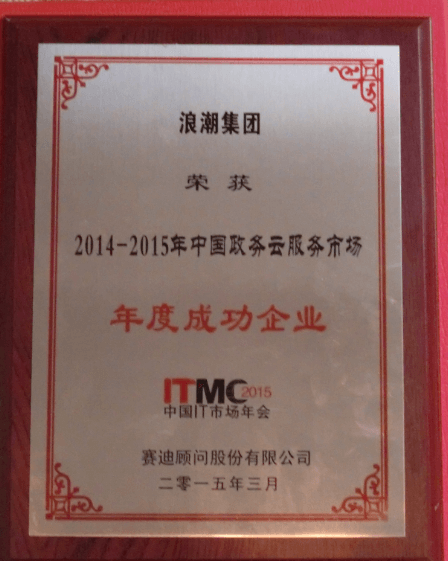
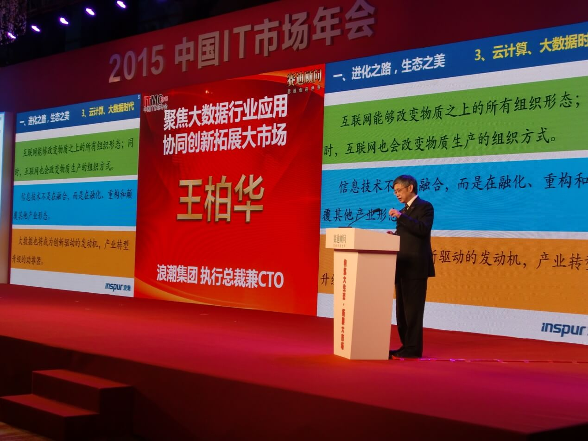

浪潮云服务年度登顶 引领政务云服务浪潮
3月17日，由工业和信息化部中国电子信息产业发展研究院主办，赛迪顾问股份有限公司承办的“2015中国IT市场年会“在北京香格里拉大饭店隆重举行。集团执行总裁、CTO王柏华应邀出席大会并做重要讲演。凭借在政务云领域的突出贡献，浪潮云服务荣膺政务云服务——年度成功企业奖，得到了行业内外的一致认可与赞誉。

在题为《聚焦大数据行业应用，协同创新拓展大市场》的演讲中，王柏华总就新挑战、新机遇下的行业发展方向及市场前景做了深入浅出的分析阐述，赢得了与会人员的高度认可。

本届年会围绕“构筑大生态，拓展大市场”这一主题展开，来自国家相关部委的主管领导，业界专家、IT企业领袖及部分行业用户等千余人参会，深入聚焦技术与应用结合，主动开拓市场创新新方向。
与常见的公有云、私有云不同，公司的“行业级云服务”基于“铁三角”的优势，旨在通过服务交付的模式，为行业内组织客户提供云计算资源，共享行业内数据，进而提升社会化服务水平。同时，浪潮云服务从第四代数据中心、海量存储，到云服务管理平台、大数据平台均实现自主研发，能为用户提供安全、可靠的云服务，是最适合中国国情的云服务模式。
政府采购云服务对“安全性”更为重视。比起个人云服务来说，政府在涉足云服务领域时需考虑的因素更为复杂，安全性、可定制以及合规性是最为关注的三个方面。浪潮云服务也正从这三方面入手打动客户：第一，为行业客户构建云平台，使行业内各组织单元通过服务交付的方式专享该平台资源。第二，浪潮拥有多年行业解决方案能力，可根据不同行业的特定需求灵活定制，满足企业个性化需求。第三，各行业都有自己的行业规范和标准，公有云的开放标准特性，很难满足行业的规范标准，而行业级云服务在建设阶段就是遵照行业规范标准实施的。浪潮行业级云服务的成功应用，消除了政府用户对云平台安全性、稳定性、网络质量，以及云服务产品性能、易用性、故障响应时间等多方面的顾虑，以灵活的客户体验、便捷的操作、迅速的响应、完美的数据迁移服务极大的体现了云服务平台的优势，充分满足了政府用户数据纷繁庞大、应用架构多层级堆叠的需求，为用户信息化核心业务奠定了坚实的基础。
2014年，浪潮云服务在政务云领域取得了巨大的突破与成功，以政务云为突破点，依托遍布全国的16大云计算中心，发力全国近50个城市，提供专业化的7*24小时服务，“一站式”的云服务新模式使得政务业务的上线效率提升多倍。以政务云为突破，浪潮云服务正在快速覆盖卫生、教育、能源、金融及交通等各行各业。
目前，浪潮云服务已经走在了整个行业的前列，成为了行业级云服务领导者。伴随着行业级云服务不断深入，加之云海IOP平台的商业模式日趋成熟，浪潮云服务正在由助力地方政府打造“智慧城市”，逐步转向将更智慧、更便捷、更高效的云服务运营模式带入到其他行业中。- 新闻链接
- 动态新闻相关了解更多...